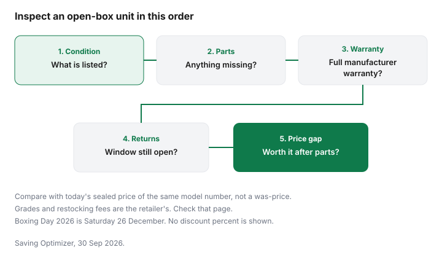

Technology · Canada
Open-Box and Clearance Electronics in Canada: Grades, Returns and Warranty
Open-box electronics in Canada are a deal only if the condition, accessories, warranty and return window are acceptable for the price gap. Grades, return windows and restocking fees are set by each retailer, so read the label on the unit. Open-box electronics sit between a sealed carton and a refurbished unit, and the sticker rarely explains which one you have. The discount is real only if the condition, the accessories, the warranty and the return window are acceptable for the price gap. This page does not rank retailers, and it does not define a chain's grade letters. Those letters change, and they were not taken from a dated retailer policy for this guide. Check the retailer. Scratch-and-dent appliances are the household cousin, on the appliance open-box guide.
Key takeaways
- Open-box, clearance, refurbished and floor model are different words. Read the label on the unit, not the aisle sign alone.
- Grades, return windows and restocking fees are the retailer's. This guide does not quote them.
- A "was" price on an open-box unit is still an ordinary-price claim. Use the Competition Bureau's volume and time tests.
- Quebec's warranty of good working order is described for new goods. If you are unsure a return still counts as new, check the Office de la protection du consommateur.
- Boxing Day is Saturday 26 December 2026. Returns after the holidays are a reason to look. They are not a measured discount.
What open-box means
In plain language, open-box means the retailer is reselling a unit that has been opened, returned, or taken out for display, and is selling it as open-box rather than as new. Clearance usually means the store is discounting stock it wants gone, and the carton may still be sealed.
Refurbished means a seller says the device was tested or repaired. A floor model is the one customers have been touching. The same shelf can hold all four. The refurbished guide is the checklist once the label says refurbished.
| Label | Condition | Warranty and returns | Accessories |
|---|---|---|---|
| Open-box | Opened or returned. Wear can be none or obvious | Check the retailer. Do not assume the sealed-item window | Count them. A missing remote or charger is part of the price |
| Clearance | Often sealed, sometimes an older model the store is moving | Check the retailer, including final sale | Usually the full set. Confirm on the box |
| Refurbished | Described as tested or repaired | The refurbished terms, which can differ from new | Whatever that program lists. Check the seller |
| Floor model | The demo. Hours of use are unknown unless the store says | Check the retailer. Display wear is the point | The demo may not include the retail box. Ask |
Grades
Some retailers sort open-box units into grades. This guide does not state those grade names or what they mean, because a grade chart has to be read on that retailer's page and dated.
Photograph the grade, the definition next to it, and the model number. If the page says "good" or "excellent" without a definition, ask what is scratched, what has been replaced, and what is missing. A grade without a sentence is a marketing word.
Compare the open-box price with the current price of a sealed unit of the same model number, not with a "was" price. The Competition Bureau's ordinary-price guidelines, dated 16 October 2009 and checked 29 Sep 2026, judge a was-price by a volume test or a time test. The guidelines' reading is more than 50 percent of sales, generally over twelve months, or an offer in good faith for more than 50 percent of the time, generally six months, with a shorter period allowed for seasonal goods. The Bureau's page says the guidelines are under review. A crossed-out sealed price does not prove the open-box discount.
Warranty
Ask two questions. Does the manufacturer warranty apply to this serial number, and does the retailer add or shorten anything?
Write the answers from the page or from a staff note you can keep. A store plan is optional. The extended-warranty guide is the comparison with manufacturer coverage and provincial law. This page does not quote a plan price.
Quebec's warranty of good working order, checked on quebec.ca 29 Sep 2026, applies to new goods bought or leased from a merchant from 5 October 2026. An open-box unit might be a customer return of a new good, or it might be used. This guide does not decide that legal question. Check the Office de la protection du consommateur before you treat a 3-year or 4-year term as attached. The Quebec warranty guide explains the new-goods rule.
Returns
A sealed-item return window is not automatically an open-box window. Final sale, a restocking fee, and a shorter holiday window are store terms.
The return-policy guide explains that a change of mind is not a general legal right you can assume. Read the open-box line on the receipt. If you are buying a gift, ask whether a later return is allowed at all. Check the retailer.

Boxing Day timing
Boxing Day in 2026 is Saturday 26 December. Gifts come back in the days after Christmas, which is a reason open-box and clearance electronics can appear then and into January.
It is not a measured share of stock, and it is not a percent off. The appliance calendar for the same weekend is on the appliance timing guide. For a sealed TV or laptop, use the tech timing guide. For an open box, the inspection list matters more than the date.
Checklist
| Step | In the store | On delivery |
|---|---|---|
| Listed condition | Match the grade words to what you can see | Photograph the carton and the unit before you accept it |
| Power and picture | Turn it on. Look for bright spots, lines or a swollen battery | Do this inside the return window, not next month |
| Missing parts | Remote, charger, stand, stylus, manuals | The same list against the packing slip |
| Warranty and return | Both in writing, on that unit | The receipt names the open-box terms, not only the sealed policy |
| Price gap | Sealed price of the same model, today, minus what you must replace | If the gap is gone once you buy a remote, it is not a deal |
Sources & date stamps
- Competition Bureau, Ordinary Price Claims, guidelines dated 16 October 2009, checked 29 Sep 2026. Volume test: more than 50 percent of sales. Time test: offered in good faith more than 50 percent of the time. The page says the guidelines are under review.
- Quebec, Garantie de bon fonctionnement, checked 29 Sep 2026. The warranty of good working order is described for new goods bought or leased from a merchant from 5 October 2026. Ask the Office de la protection du consommateur if you need to know whether a particular open-box unit is still a new good.
- Calendar: Boxing Day is Saturday 26 December 2026. No open-box count or discount percent is stated.
Frequently asked questions
What does open box mean?
Open-box usually means a retailer is selling a unit that has been opened or returned, not a factory-sealed carton. The condition can be almost new or visibly used, and the accessories may be incomplete. The word is not a national grade. Read that retailer's definition on the day you buy, and check the retailer if the page is vague.
Do open-box electronics come with a warranty?
Sometimes the manufacturer warranty still applies, and sometimes the retailer offers its own shorter term. This guide does not quote a day count. Ask who honours the warranty and whether it matches the sealed version of the same model. In Quebec, the warranty of good working order on quebec.ca is described for new goods, so check the Office if you are unsure a returned unit still counts as new.
Can I return an open-box item?
Only on the terms that retailer prints for that unit. A change-of-mind return is a store policy, and an open-box tag can shorten it or mark the unit final sale. Read the sign and the receipt before you pay. The return-policy guide is the overview, and it is not an electronics-wide right.
Is open box the same as refurbished?
No. Open-box means the carton has been opened or the unit has been returned, while refurbished means someone says it was inspected or repaired, and a floor model is the demo on the shelf. Clearance can still be a sealed unit the store wants to move. Check the label on the unit you are holding.
When are open-box deals most common?
Returned gifts are a reason open-box stock can show up after Christmas, and Boxing Day is Saturday 26 December 2026. This page does not cite a count or a percent off for that week. Check the retailer in late December and in January, and judge the unit with the inspection list rather than the season.
Researched and drafted with AI assistance and fact-checked against official Canadian sources. How we create content.
Disclosure: Electronics retailer offers are an offer type. Saving Optimizer may earn a commission if a partner link is added later. No partnership is claimed. A retailer link does not change a grade, a restocking fee or a warranty. Education only.